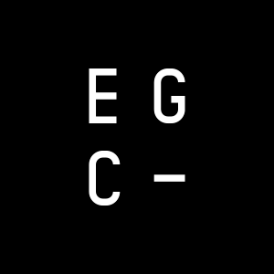
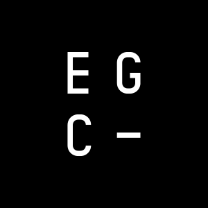
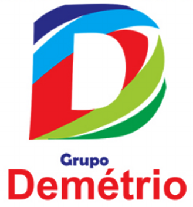
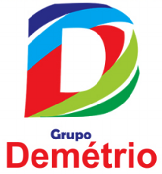

Bianca Moresco
Riosulense, 24 anos, graduada em Design gráfico. Empreendedora, marketeira, fotógrafa, web designer, curiosa, apaixonada pela vida, por bicicleta e pela ideia de poder propagar um mundo melhor.
MAIS SPEAKERS EM BREVE...
Tecnologia, Entretenimento e Design. O TED é uma organização sem fins lucrativos que nasceu na Califórnia em 1984 e tem crescido para apoiar ideias que mudam o mundo através de múltiplas iniciativas.
O TEDx é um programa de eventos locais organizado de forma indepen- dente que reúne pessoas para compartilhar a experiência de um TED. O TEDxRioDoSul é um evento único, credenciado pelo TED e que acontece- rá uma vez ao ano.

Riosulense, 24 anos, graduada em Design gráfico. Empreendedora, marketeira, fotógrafa, web designer, curiosa, apaixonada pela vida, por bicicleta e pela ideia de poder propagar um mundo melhor.

Estudante de biblioteconomia, além de muita leitura, tem experiência com organização de eventos na área educacional. Resolveu despertar novas centelhas integrando a equipe do TEDxRioDoSul.
Programador empreendedor, apaixonado por gamificação e alta performance, em busca do constante estado de flow.

Head de programação na RocketSeat, apaixonado pela web, desenvolvimento móvel e empreendedorismo.

Mãe do Dudu, Formada em Relações Públicas e Especialista em Gestão de Pessoas. Participou do TEDXBLUMENAU, evento no qual a deixou motivada pela busca do seu crescimento profissional.
Especialista em TI e Educação. Sempre foi atraído por bons conteúdos e possibilidades de Networking. Após participar de alguns TEDxs sentiu a necessidade e extrema vontade de trazer esta experiência para Rio do Sul, e assim fez.
Sócio diretor da Empresa HARDSIS, Presidente da FUNPAZ - Fundação Pássaro Azul e dromomaníaco por natureza
Cursando o ensino médio e se orgulha de dizer que é o caçula do grupo. Nos próximos eventos vai dizer que é formado em TI ou Comércio Exterior. Quer experimentar as mais diversas experiências em todos os lugares possíveis.
Designer de Serviços, engajado com o movimento de inovação e Empreendedorismo, atualmente é Diteror Técnico de Gestão e Inovação na Prefeitura de Rio do Sul e Designer de Serviço na Dopamine Criativação.
Programador, empreendedor e entusiasta das boas ideias. Apaixonado por tecnologia, entretenimento e design desde que se entende por gente. A relação com o TED não poderia ser diferente.
Mãe, Empreendedora, apaixonada por E-commerce, e desafios! Expert em atendimento ao consumidor, é sonhadora, e acredita que tudo se torna muito maior quando feito com amor.

29 anos, publicitário, designer e estudante de Marketing. Entusiasta por natureza, apaixonado por futebol, ama estar rodeado de gente boa e de colaborar para um mundo mais feliz.
 

 
